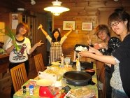
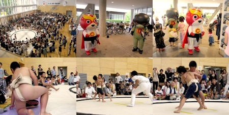
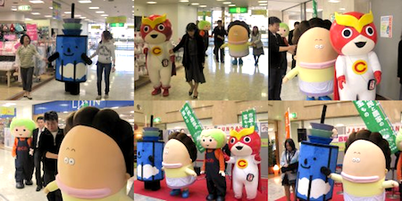
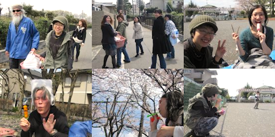

| 
30、31日と山梨県のとある別荘地にてスタッフ全員で社員旅行に行ってきました！森に囲まれた別荘で、道路を野生の鹿が横切ったり野鳥が歩いていたり…自然でいっぱい。そんな中、エクラスタッフは料理対決からゲーム、牧場に行って動物達と触れ合ったりなど…とても楽しい２日間でした！ |
|
キャラ丸くんとドク丸くんとできらっとのわんぱく相撲大会の応援に行ってきました！元気いっぱいな子供たちばかりでキャラ丸くんもドク丸くんも負けてられないね。たくさん応援してきました！  |
|
アスタセンタービルにて。『そらぽん』のお披露目会にキャラ丸くんもお呼ばれしたのでお邪魔してきました！他にもあたしンちのお母さんや、西東京市産農産物のキャラクターめぐみちゃんもやって来てみんなでワイワイガヤガヤ！  |
|
4月といえばお花見！と、いうことでエクラスタッフ一同でお花見に行ってきました。みんなでお弁当や飲み物、お菓子等を持って近くの広い公園でお花見してきました！途中からシャボン玉大会になったり…とっても楽しかったよ！  |
|
4月3日・4日と、東大農場で観桜会が開かれました。キャラ丸君は4日の観桜会に参加。東大農場の桜はとってもきれい、この日はたくさんの人々がお花見に来ていました！そしてお花見にきた子供たちに囲まれてキャラ丸君はモテモテ。みなさんぜひ１度遊びに来てくださいね！ |
3月25日 東京国際アニメフェア3月25日から28日の4日間行われた東京国際アニメフェアに参加してきました。多くのアニメ会社が参加している中、今年旬のアニメが紹介されており、エクラアニマルはアニメ事業者協会のメンバーとして参加してきました。色んなキャラクター達も参加していて面白かったです！次はキャラ丸くんも参加できるといいね。 |